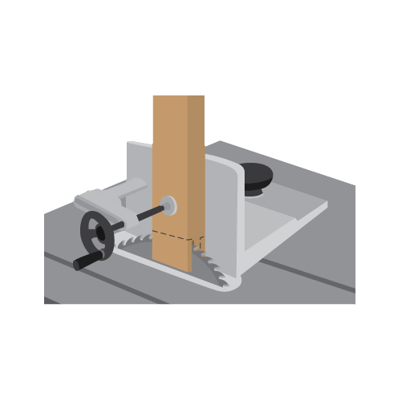

.jpeg)
Process
Making a mortise and tenon joint may be a daunting prospect to the novice woodworker, but with the proper tools, shaping the parts is a quite straight forward process.
Tools you may use
Chisel
Drill
Rout
Jig
Table Saw
How to make Mortise
and Tenon?
1
Measure
Measure
Measure your tenon piece . Mark the thickness and location of the tenon on the tenon piece.
2
Table Saw Adjustments
Table Saw Adjustments
Next, adjust the fence to align the mark on your material with the blade. Now, adjust the blade height to match the desired length of the tenon.
3
Face Cuts
Face Cuts
To ensure a smooth cut, use a tenoning jig in the miter slot to help push the piece through the blade. Rotate the piece 180 degree to make your other face cut.

4
Edge Cuts
Edge Cuts
Adjust the fence and make the edge cuts - forming the sides of the tenon.
5
Shoulder Cuts
Shoulder Cuts
For the shoulder cuts, lower the blade to the correct height - the width of the shoulders of the tenon - removing the last of the material from the tenon.
6
Drill Press and
Chisel Method
Drill Press and
Chisel Method
Mark the mortise space with your new tang piece. Set drill to depth and bore holes. Pare the mortise with a chisel to fit tenon.
Using a mallot and the right size chisel, begin by removing material near the middle of the mortise. This makes space in the mortise to form the walls. Now, chisel the walls of the mortise.
Using a mallot and the right size chisel, begin by removing material near the middle of the mortise. This makes space in the mortise to form the walls. Now, chisel the walls of the mortise.